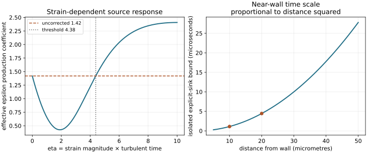

12. Calibration and alternative turbulence time scales
A coefficient can be compatible with an idealized flow without being determined uniquely by it. A change of dependent variable can make one source term easier to evaluate without removing stiffness from the whole system. These two distinctions connect the remaining calibration of the baseline \(k\)–\(\epsilon\) model to RNG, one-equation and \(k\)–\(\omega\) closures. We will derive the compatibility relations, identify exactly what a variable transformation produces, and compare that result with a separately modeled equation.
Lessons 36–39 complete the earlier calibration discussion and introduce alternative closures. Full captions were read, including the instructor's correction of the decay-exponent calculation. Equations below distinguish lecture examples, a versioned RNG implementation, and the specifically named Wilcox 1988 model. No spatial RANS solver, RNG renormalization derivation or new experimental fit is claimed.
12.1 A logarithmic region supplies a compatibility relation L36 · 00:17
Let \(y\gt 0\) measure distance from a smooth stationary wall, \(U(y)\) be the mean streamwise velocity, \(\nu\) molecular kinematic viscosity, and \(u_\tau=\sqrt{\tau_w/\rho}\gt 0\) the friction velocity for positive wall shear \(\tau_w\) and constant density \(\rho\). Turbulent kinetic energy per mass is \(k\), its pseudo-dissipation rate is \(\epsilon\), and the baseline model sets \(\nu_t=C_\mu k^2/\epsilon\). Their units are respectively \(\mathrm{m^2\,s^{-2}}\), \(\mathrm{m^2\,s^{-3}}\) and \(\mathrm{m^2\,s^{-1}}\). The mean strain is \(S_{ij}=(\partial_jU_i+\partial_iU_j)/2\), with modeled production \(\mathcal P=2\nu_t S_{ij}S_{ij}\). In simple parallel shear, \(\mathcal P=\nu_t(U')^2\), where a prime here means \(d/dy\), not a random fluctuation.
Suppose an overlap region has negligible molecular shear, nearly constant total shear, local energy production equal to destruction, and the logarithmic mean gradient \(U'=u_\tau/(\kappa y)\), with dimensionless \(\kappa\gt 0\). These are additional approximations to the mean and energy balances. They give, in order,
The last expression follows by equating the two expressions for \(\nu_t\), with positive \(k\). It is constant in this idealization. This explains why the \(k\) diffusion vanishes in the reduced problem; it does not justify neglecting diffusion in the \(\epsilon\) equation. A field proportional to \(1/y\) has a nonzero gradient and a nonzero divergence of its modeled diffusive flux.
Let \(C_{\epsilon1}\) and \(C_{\epsilon2}\) multiply production and destruction in the baseline \(\epsilon\) equation, and let \(\sigma_\epsilon\gt 0\) divide its turbulent diffusivity. With parallel steady mean flow, no streamwise variation, and negligible molecular diffusion in this overlap region, its balance is
Differentiate the assumed profiles explicitly. The inner flux is \(-u_\tau^4/(\sigma_\epsilon y)\); its derivative is \(+u_\tau^4/(\sigma_\epsilon y^2)\). The reaction factor is \(\epsilon^2/k=\sqrt{C_\mu}u_\tau^4/(\kappa^2y^2)\). Hence
Every term in the reduced \(\epsilon\) balance has units \(\mathrm{m^2\,s^{-4}}\). The negative source difference balances a positive diffusion term. Omitting diffusion here would instead require equal production and destruction coefficients, a materially different result. Equation (12.1) constrains a set of coefficients jointly; it cannot determine all of them from one idealized profile.
Two calibration discrepancies, both kept visible
Lesson 36 revisits the preceding grid-decay calculation. A single decay exponent \(m=1.25\) gives \(C_{\epsilon2}=1+1/m=1.8\), whereas the adopted baseline value is \(1.92\). The instructor explains the latter as a broader choice that also considers free shear flows. The arithmetic relation and the adopted coefficient therefore have different evidential roles.
Now insert \(C_\mu=0.09\), \(\sigma_\epsilon=1.3\), \(C_{\epsilon2}=1.92\) and \(\kappa=0.41\) into (12.1). It gives \(C_{\epsilon1}=1.48897436\). Lesson 37 explicitly discusses this approximately \(1.489\) result and the commonly adopted \(1.44\), again appealing to wider calibration. Conversely, the coefficient set \(0.09,1.3,1.92,1.44\) implies \(\kappa=0.43266615\) under these exact reduced assumptions. Rounding \(1.489\) to \(1.44\) is not a valid derivation.
These comparisons do not disprove every use of the baseline model. They show that the often quoted constants are a compromise across behaviors, rather than simultaneous exact consequences of each calibration argument. A fit should identify which observations it privileges and which discrepancies remain.
12.2 RNG changes the response to strain L37 · 00:17
The source next introduces a renormalization-group motivated alternative, conventionally called an RNG \(k\)–\(\epsilon\) model. We inspect its strain-dependent source correction rather than reconstructing an uninspected statistical derivation. Define the scalar strain magnitude \(\mathcal S=\sqrt{2S_{ij}S_{ij}}\geq0\), a turbulent time \(t_t=k/\epsilon\gt 0\), and the dimensionless ratio
Here \(\eta_0\gt 0\) and \(\beta_R\gt 0\) are dimensionless model constants. When \(\mathcal S\gt 0\), \(1/\mathcal S\) is a mean deformation time, so \(\eta\) is turbulent time divided by deformation time. The strain magnitude itself has units of inverse time; it is not the time scale. In incompressible simple shear \(\mathcal S=|U'|\), so the ratio has a direct interpretation in our running case.
The OpenFOAM Foundation 4.1 RNG implementation computes this correction and uses \((C_{\epsilon1}-R_\eta)\mathcal P\epsilon/k\) in the destruction-rate production term. Its documented coefficient set is \(C_\mu=0.0845\), \(C_{\epsilon1}=1.42\), \(C_{\epsilon2}=1.68\), \(\sigma_k=\sigma_\epsilon=0.71942\), \(\eta_0=4.38\), \(\beta_R=0.012\), in a divisor convention for turbulent diffusivity. The versioned model description records the associated literature reference. We have inspected the equations and implementation; we have not executed OpenFOAM or read that original derivation.
The lecture's illustrative list uses \(C_\mu=0.085\), \(\sigma_k=1\) and \(\sigma_\epsilon=0.719\). In particular the two \(\sigma_k\) values above are different, not a silent rounding change. Reproducing a named implementation requires its entire set and its diffusion convention. Combining one version's viscosity constant with another version's diffusion is a new choice that must be declared.
For \(0<\eta<\eta_0\), the numerator is positive and the correction reduces the effective production coefficient. At \(\eta=\eta_0\), it vanishes. For \(\eta>\eta_0\), it increases that coefficient. In the versioned example, \(\eta=2\) gives \(R_\eta=0.99156751\) and \(C_{\epsilon1}^{\rm eff}=0.42843249\); \(\eta=8\) gives \(R_\eta=-0.92551402\) and \(C_{\epsilon1}^{\rm eff}=2.34551402\). This is a change of the local modeled response, not an automatic guarantee of accuracy in every rapid deformation.
For this incompressible linear eddy-viscosity model, \(\mathcal P=C_\mu\eta^2\epsilon\). Thus the same additional contribution may be written
This algebra explains why two presentations can place an RNG correction in different parts of the source balance. The displayed negative sign does not make it a destruction term for every \(\eta\); the numerator changes sign. Matching only the name “RNG” while missing this factor or its sign would produce another model. At large \(\eta\), \(R_\eta\sim-1/(\beta_R\eta_0\eta)\to0\) from below, so the effective coefficient returns toward \(1.42\) from above.
The feedback also needs interpretation. Holding the current mean strain and \(k,\epsilon\) fixed while changing a source coefficient is a local comparison. After integration, altered \(\epsilon\) changes the turbulent time \(k/\epsilon\), viscosity, mean shear and then \(\eta\) itself. A plot of the coefficient against a prescribed \(\eta\) is therefore a constitutive diagnostic, not a prediction of the final coupled state. This distinction prevents a source correction that looks favorable in isolation from being mistaken for validation of a mean-flow solution.
12.3 One transported energy still needs a supplied length L37 · 21:40
A Prandtl-type one-equation approach retains a modeled transport equation for \(k\), supplies a positive turbulent length \(L_t\) algebraically, and sets
The subscript on \(L_t\) distinguishes this closure length from a domain size or a streamwise development distance. Both constants are dimensionless. Dimensional analysis permits these forms but does not force their coefficients to be equal. If we retain \(\nu_t=C_\mu k^2/\epsilon\), substitution gives \(C_\nu=C_\mu/C_D\). Writing the same constant in the dissipation formula and the original two-equation viscosity formula absorbs it completely from the length-based viscosity. This is a notation choice, not an additional physical law.
Transporting \(k\) introduces history and convection that a purely algebraic viscosity lacks. The missing length still encodes substantial physics. A wall distance can be a useful local input in a simple attached layer; it cannot by dimensional reasoning identify the relevant eddy size in every separated region, jet or interacting shear layer. A one-equation classification counts transported turbulence variables, not the amount of constitutive information supplied elsewhere.
What doubling the prescribed length actually does
At a fixed instantaneous \(k=0.19\ \mathrm{m^2\,s^{-2}}\), take \(C_D=0.09\), \(C_\nu=1\). With \(L_t=0.01\ \mathrm m\), \(\epsilon=0.74537172\ \mathrm{m^2\,s^{-3}}\) and \(\nu_t=0.00435890\ \mathrm{m^2\,s^{-1}}\). Doubling \(L_t\) halves that destruction and doubles that viscosity. These are pointwise comparisons before \(k\) responds.
For a second, more restrictive comparison, prescribe a constant shear \(\mathcal S=10\ \mathrm{s^{-1}}\), discard transport and impose a positive local equilibrium \(\nu_t\mathcal S^2=\epsilon\). Cancellation of \(\sqrt{k}\gt 0\) yields \(k_{\rm eq}=(C_\nu/C_D)(L_t\mathcal S)^2\). The two lengths then give \(0.11111111\) and \(0.44444444\ \mathrm{m^2\,s^{-2}}\). The equilibrium energy quadruples. This does not prove that the energy in an arbitrary coupled flow increases monotonically with the chosen length: the mean shear and transport may change too.
12.4 A finite source limit is different from numerical stability L38 · 00:15
Lesson 38 motivates a change of variable by inspecting difficult near-wall ratios in the \(k\)–\(\epsilon\) equations. At a smooth no-slip wall, sufficiently differentiable velocity fluctuations have tangential components of order \(y\) and normal component of order \(y^2\). Generically \(k\sim A y^2\) with \(A>0\), while the physical pseudo-dissipation may tend to a finite positive value. This does not require that its wall value be a universal global maximum. A particular high-Reynolds-number model is not automatically valid down to that physical wall limit.
There is a useful cancellation in one baseline source. With positive \(k,\epsilon\),
This expression avoids an explicit division by small \(k\), under precisely this production and viscosity closure. The destruction \(C_{\epsilon2}\epsilon^2/k\) has no corresponding cancellation. A solver must consider limits, boundary treatment and positivity. Changing production limiters or model functions can change which cancellation remains valid.
The lecture's contrast between gradient terms and nonlinear sources is useful motivation, but gradients do not confer unconditional stability. For a constant-coefficient one-dimensional diffusion equation discretized by centered differences and forward Euler, the update is a convex combination only if \(D\Delta t/\Delta y^2\leq1/2\), where \(D>0\) is diffusivity. A fine wall spacing imposes a small explicit time step. Implicit treatment changes that restriction but still requires appropriate discretization and solution of the resulting system.
Likewise a locally finite reaction can be stiff. For \(d\omega/dt=-\beta\omega^2\), a positive starting value has exact solution \(\omega(t+\Delta t)=\omega(t)/(1+\beta\omega(t)\Delta t)\). Forward Euler instead produces \(\omega(t)[1-\beta\omega(t)\Delta t]\), which becomes negative if \(\Delta t>1/(\beta\omega(t))\). Stability, positivity and truncation error are related but distinct properties. A convenient algebraic limit establishes none of them for the entire coupled solver.
12.5 Transforming \(\epsilon\) to \(\omega\) requires product rules L38 · 18:31
Introduce a constant \(\beta_*\gt 0\) and define the specific destruction variable \(\omega=\epsilon/(\beta_*k)\), with units \(\mathrm{s^{-1}}\), wherever \(k>0\). Then \(\nu_t=(C_\mu/\beta_*)k/\omega\). The familiar \(\nu_t=k/\omega\) follows if \(\beta_*=C_\mu\). It does not follow from the units alone. We will first transform the baseline equations exactly in this positive interior, then compare that transformed system with a different closure.
Write \(D_U=\partial_t+U_j\partial_j\), \(D_k=\nu+\nu_t/\sigma_k\) and \(D_\epsilon=\nu+\nu_t/\sigma_\epsilon\). Here \(D_k,D_\epsilon\) are diffusivities, not material derivative operators. The modeled scalar equations are
The quotient rule gives \(D_U\omega=(D_U\epsilon)/(\beta_*k)-(\omega/k)D_Uk\). The two source terms transform directly, but diffusion must act on the product \(\epsilon=\beta_*k\omega\). Applying the product rule twice gives the exact transformed interior equation
For clarity, one intermediate identity is \(k^{-1}\nabla\cdot[D_\epsilon\nabla(k\omega)]=\nabla\cdot(D_\epsilon\nabla\omega)+(2D_\epsilon/k)\nabla k\cdot\nabla\omega+(\omega/k)\nabla\cdot(D_\epsilon\nabla k)\). Subtracting the \(k\)-diffusion contribution produces the difference term in (12.2). The identity retains spatial variation of diffusivity inside its divergence.
Even if \(D_k=D_\epsilon=D\), the cross-gradient term \(2D\nabla k\cdot\nabla\omega/k\) remains. Simply dividing the \(\epsilon\) equation by \(\beta_*k\) misses both the time derivative of \(k\) and these spatial terms. The captions warn against a naive manipulation; the remedy is an explicit transformation, or an explicit decision to formulate a new model. These are different operations.
A pointwise transformation check
Without spatial gradients, choose \(k=0.19\), \(\epsilon=0.5\), \(\mathcal P=0.8\) in consistent SI units and \(\beta_*=0.09\). Compute \(D_Uk\) and \(D_U\epsilon\) from the baseline sources, then apply the quotient rule. Equation (12.2) gives the same \(-16.62049861\ \mathrm{s^{-2}}\), with a floating-point difference \(3.553\times10^{-15}\). This checks the source algebra at one state. It does not test the spatial cross-gradient term or validate a closure against turbulent data.
The transformed source coefficients are \(\gamma=C_{\epsilon1}-1=0.44\) and \(\beta=(C_{\epsilon2}-1)\beta_*=0.0828\). Attaching a familiar model name while replacing these coefficients and dropping transformation terms changes the model. Such a change can be motivated and calibrated, but it must be stated.
A spatial check that cannot hide the cross-gradient term
For a separate manufactured test, take a nondimensional coordinate \(x\) and positive interior fields \(k=1+0.2x+0.1x^2\), \(\omega=2+0.4x+0.3x^2\), \(D_\epsilon=0.5+0.1x\) and \(D_k=0.4+0.2x\). A chosen consistent set of reference scales has removed their physical units for this algebraic test. Evaluate the diffusion contribution directly as \(\{\partial_x[D_\epsilon\partial_x(k\omega)]-\omega\partial_x(D_k\partial_xk)\}/k\).
The code also evaluates its three expanded pieces in (12.2) at \(x=0.3\). Both cross-gradient and unequal-diffusivity pieces are nonzero. Their sum with \(\partial_x(D_\epsilon\partial_x\omega)\) agrees with the direct product evaluation to roundoff. This supplies a check independent of the homogeneous source test, which has no gradients and would pass even if the entire spatial transformation had been omitted. The chosen fields are not asserted to solve the turbulence equations; their purpose is to expose a product-rule error.
12.6 Specify which \(k\)–\(\omega\) model is being used L39 · 00:15
To make the comparison reproducible, use the incompressible Wilcox 1988 form documented in the Turbulence Modeling Resource's Wilcox variants page. The course's early coefficient example is consistent with this choice when the diffusion convention is translated. With the same linear-stress production, its basic equations are
The superscript \(W\) labels multipliers of \(\nu_t\). A divisor equal to \(2\) produces the same turbulent diffusivity as a multiplier equal to \(1/2\). A divisor \(1/2\) would instead give four times that value. This convention must be resolved before judging whether two coefficient tables agree. Later Wilcox 1998 and 2006 models, low-Reynolds-number modifications, and SST are separate variants with changes to functions, sources or viscosity. Their attractive features cannot be assigned wholesale to (12.3).
Equation (12.3) is not merely (12.2) with different notation. Its coefficients differ and it omits the explicit cross-gradient and unequal-diffusivity terms derived above. Those differences express new closure decisions. For positive fields, the viscosity relation makes the modeled \(\omega\)-production \(2\gamma S_{ij}S_{ij}\), with no explicit \(k\). This is a useful partial simplification of the source. The diffusivity still contains \(k/\omega\), and the mean velocity depends on the turbulent stress. The whole system is coupled.
Its ideal logarithmic compatibility can also be checked. With the same constant-stress assumptions, \(k=u_\tau^2/\sqrt{\beta_*}\), \(\omega=u_\tau/(\kappa\sqrt{\beta_*}y)\), and \(\nu_t=\kappa u_\tau y\). Substitution into the \(\omega\) equation gives
This agreement is specific to the stated constants and idealized balance. It neither proves a universal logarithmic constant nor establishes the model's response to separation, anisotropy or freestream boundary choices.
A second limiting check is less comfortable numerically. The resource documents the smooth-wall asymptotic behavior \(\omega\sim6\nu/(\beta y^2)\). It follows by balancing \(\nu\omega''-\beta\omega^2=0\): for \(\omega=A_\omega/y^2\), the coefficient condition is \(6\nu A_\omega-\beta A_\omega^2=0\). The positive branch gives the stated result. This is a limiting model balance, not an instruction to evaluate infinity as a boundary value. A numerical wall prescription needs a stated finite-distance treatment.
The variable \(\omega\) therefore diverges at the smooth wall, despite replacing a difficult ratio elsewhere. It also follows from the physical scaling \(\epsilon/(\beta_*k)\sim y^{-2}\), but that observation alone does not fix the model coefficient \(6\nu/\beta\) or prove that the unmodified model reproduces the exact physical \(k\sim y^2\) asymptote. The physical limiting argument and the selected modeled balance should not be conflated.
A variable change does not remove the small time scale
Take \(\nu=1.5\times10^{-5}\ \mathrm{m^2\,s^{-1}}\) and \(\beta=0.075\). At \(y=10\ \mu\mathrm m\), the model asymptote gives \(\omega=1.2\times10^7\ \mathrm{s^{-1}}\). The isolated explicit sink preserves positivity only for \(\Delta t\leq1.111111\times10^{-6}\ \mathrm s\). Doubling the distance reduces \(\omega\) by four and raises this bound by four.
At the smaller distance, an explicit \(2\ \mu\mathrm s\) step gives \(-9.6\times10^6\ \mathrm{s^{-1}}\), whereas the exact isolated sink gives \(4.285714\times10^6\ \mathrm{s^{-1}}\). This deliberately excessive step demonstrates one numerical failure. A spatially resolved wall equilibrium includes diffusion that balances the sink, so the experiment is not a prediction that its continuous solution becomes negative. It motivates source treatment and resolution analysis in an actual solver.

12.7 Reproduce the restricted checks
Run ch12_alternative_scales.py with Python 3. It uses only the standard library. The listing and observed output below are checked against the file by the book's code validator. The comparisons test arithmetic, dimensions, a pointwise transformation and an isolated time step. They do not replace a discretized channel-flow validation.
"""Calibration and restricted time-scale checks, not a spatial RANS solver."""
from math import sqrt
Cmu, C1, C2, sigma_eps, kappa = 0.09, 1.44, 1.92, 1.3, 0.41
inferred_C1 = C2 - kappa * kappa / (sigma_eps * sqrt(Cmu))
implied_kappa = sqrt(sigma_eps * sqrt(Cmu) * (C2 - C1))
print(f"log-balance C_epsilon1 with kappa0.41: {inferred_C1:.8f}")
print(f"kappa implied by baseline coefficient set: {implied_kappa:.8f}")
eta0, beta_rng = 4.38, 0.012
for eta in (0.0, 2.0, eta0, 8.0):
correction = eta * (1 - eta / eta0) / (1 + beta_rng * eta**3)
print(
f"RNG eta={eta:.2f}: correction={correction:.8f}, effective "
f"C1={1.42 - correction:.8f}"
)
k, CD, Cnu, S = 0.19, 0.09, 1.0, 10.0
for length in (0.01, 0.02):
epsilon = CD * k**1.5 / length
viscosity = Cnu * length * sqrt(k)
equilibrium = (Cnu / CD) * (length * S) ** 2
print(
f"one-equation length={length:.3f} m: epsilon={epsilon:.8f}, "
f"nu_t={viscosity:.8f}, prescribed-shear equilibrium "
f"k={equilibrium:.8f}"
)
beta_star, beta_wilcox, gamma = 0.09, 3 / 40, 5 / 9
sigma_w = 0.5 # Multiplier convention for the 1988 model.
print(
f"Wilcox1988 implied kappa: "
f"{sqrt(
(beta_wilcox / beta_star - gamma) * sqrt(beta_star) / sigma_w
):.8f}"
)
print(
f"transformed baseline source coefficients: gamma={C1 - 1:.8f}, "
f"beta={(C2 - 1) * beta_star:.8f}"
)
# Pointwise homogeneous source transformation, no spatial gradients.
epsilon, production = 0.5, 0.8
omega = epsilon / (beta_star * k)
dk = production - epsilon
de = C1 * epsilon / k * production - C2 * epsilon**2 / k
quotient = de / (beta_star * k) - omega * dk / k
transformed = (C1 - 1) * omega * production / k - (
C2 - 1
) * beta_star * omega**2
print(f"omega quotient source 1/s2: {quotient:.8f}")
print(f"transformed source agreement: {abs(quotient - transformed):.3e}")
assert abs(quotient - transformed) < 1e-12
# Spatial product-rule check in a positive interior, with varying diffusivity.
# These are manufactured scalar fields, not a solution of the RANS system.
x = 0.3
kx, ox = 1 + 0.2 * x + 0.1 * x * x, 2 + 0.4 * x + 0.3 * x * x
kp, kpp = 0.2 + 0.2 * x, 0.2
op, opp = 0.4 + 0.6 * x, 0.6
De, Dk, Dep, Dkp = 0.5 + 0.1 * x, 0.4 + 0.2 * x, 0.1, 0.2
product_diff = Dep * (kp * ox + kx * op) + De * (
kpp * ox + 2 * kp * op + kx * opp
)
k_diff = Dkp * kp + Dk * kpp
direct = product_diff / kx - ox * k_diff / kx
omega_diff = Dep * op + De * opp
cross = 2 * De * kp * op / kx
unequal = ox * ((Dep - Dkp) * kp + (De - Dk) * kpp) / kx
print(
f"spatial quotient diffusion: direct={direct:.8f}, "
f"expanded={omega_diff + cross + unequal:.8f}"
)
print(f"spatial omitted terms: cross={cross:.8f}, unequal={unequal:.8f}")
assert abs(direct - (omega_diff + cross + unequal)) < 1e-14
# Near-wall singular reference and a deliberately excessive explicit step.
nu = 1.5e-5
for distance in (1e-5, 2e-5):
wall_omega = 6 * nu / (beta_wilcox * distance**2)
positive_step = 1 / (beta_wilcox * wall_omega)
print(
f"distance={distance * 1000000.0:.0f} micrometres: "
f"omega={wall_omega:.6e}, explicit-sink positivity limit "
f"s={positive_step:.6e}"
)
wall_omega = 6 * nu / (beta_wilcox * 1e-10)
dt = 2e-6
euler = wall_omega * (1 - beta_wilcox * wall_omega * dt)
exact = wall_omega / (1 + beta_wilcox * wall_omega * dt)
print(
f"isolated sink after2microseconds: Euler={euler:.6e}, exact={exact:.6e}"
)
assert euler < 0 < exact
log-balance C_epsilon1 with kappa0.41: 1.48897436 kappa implied by baseline coefficient set: 0.43266615 RNG eta=0.00: correction=0.00000000, effective C1=1.42000000 RNG eta=2.00: correction=0.99156751, effective C1=0.42843249 RNG eta=4.38: correction=0.00000000, effective C1=1.42000000 RNG eta=8.00: correction=-0.92551402, effective C1=2.34551402 one-equation length=0.010 m: epsilon=0.74537172, nu_t=0.00435890, prescribed-shear equilibrium k=0.11111111 one-equation length=0.020 m: epsilon=0.37268586, nu_t=0.00871780, prescribed-shear equilibrium k=0.44444444 Wilcox1988 implied kappa: 0.40824829 transformed baseline source coefficients: gamma=0.44000000, beta=0.08280000 omega quotient source 1/s2: -16.62049861 transformed source agreement: 3.553e-15 spatial quotient diffusion: direct=0.50142937, expanded=0.50142937 spatial omitted terms: cross=0.14953040, unequal=-0.02410103 distance=10 micrometres: omega=1.200000e+07, explicit-sink positivity limit s=1.111111e-06 distance=20 micrometres: omega=3.000000e+06, explicit-sink positivity limit s=4.444444e-06 isolated sink after2microseconds: Euler=-9.600000e+06, exact=4.285714e+06
Use the experiment to decide what further evidence a solver needs. A conservative spatial discretization must retain the appropriate variable diffusion. Positive boundary data do not by themselves guarantee positive interior \(k,\epsilon,\omega\). A computed mean velocity should be compared against data with a declared model variant, wall treatment, mesh and convergence study. Reporting only the number of turbulence equations is insufficient to reproduce that comparison.
12.8 Exercises with complete solutions
The exercises use positive interior fields and incompressible linear-stress production unless another assumption is stated. Do the differentiations before consulting the solutions.
1. Derive the log-region coefficient constraint and test its sign.
Use \(\nu_t=\kappa u_\tau y\), \(\epsilon=u_\tau^3/(\kappa y)\), \(k=u_\tau^2/\sqrt{C_\mu}\). Differentiation gives \((\nu_t\epsilon'/\sigma_\epsilon)'=u_\tau^4/(\sigma_\epsilon y^2)>0\). Meanwhile \(\epsilon^2/k=\sqrt{C_\mu}u_\tau^4/(\kappa^2y^2)>0\). Dividing the steady equation by \(u_\tau^4/y^2\) gives (12.1). For positive coefficients and \(\kappa\), it requires \(C_{\epsilon2}>C_{\epsilon1}\). With the baseline constants and \(\kappa=0.41\), the result is \(1.48897436\), not \(1.44\). Setting the two source coefficients equal cannot balance the retained positive diffusion.
2. Explain the RNG correction at zero, threshold and very large strain ratio.
At \(\eta=0\), \(R_\eta=0\). At \(\eta=\eta_0\), its numerator again vanishes. Between them it is positive, reducing \(C_{\epsilon1}^{\rm eff}\); above the threshold it is negative, increasing that coefficient. Dividing numerator and denominator by \(\eta^3\) gives \(R_\eta=[\eta^{-2}-1/(\eta_0\eta)]/[\eta^{-3}+\beta_R]\). Thus \(R_\eta\sim-1/(\beta_R\eta_0\eta)\to0\) from below. With \(0.012\) and \(4.38\), the leading coefficient is approximately \(-19.0259/\eta\), and the effective production coefficient tends to \(1.42\) from above. This asymptote describes the formula, not an assertion that all such high-strain states are physically realized or well predicted.
3. Recover the length-based viscosity coefficient and its equilibrium sensitivity.
Substitution into \(C_\mu k^2/\epsilon\) gives \(\nu_t=(C_\mu/C_D)L_t\sqrt{k}\); hence \(C_\nu=C_\mu/C_D\). For prescribed simple shear, balance \(C_\nu L_t\sqrt{k}\mathcal S^2=C_Dk^{3/2}/L_t\). Dividing by \(\sqrt{k}\) and multiplying by \(L_t/C_D\) gives \(k=(C_\nu/C_D)L_t^2\mathcal S^2\). Doubling \(L_t\) therefore quadruples positive equilibrium \(k\) for this fixed-shear local problem. If the mean flow changes, the shear is no longer held fixed and the conclusion needs a new coupled calculation.
4. Can equal scalar diffusivities eliminate all transformation terms?
No. Put \(D_k=D_\epsilon=D\) into (12.2). The difference-divergence term vanishes, but \(2D\nabla k\cdot\nabla\omega/k\) remains. As a local check, take \(k=k_0+a x>0\), \(\omega=\omega_0+b x>0\) and constant \(D\). Their separate Laplacians vanish, but \(\partial_x^2(k\omega)=2ab\), so the transformed diffusion is \(2Dab/k\). Simply replacing the product Laplacian by \(k\) times the \(\omega\) Laplacian loses this contribution. The check applies in an interior interval where both linear fields remain positive.
5. Identify the source coefficients generated by an actual variable transformation.
The quotient rule subtracts \((\omega/k)\mathcal P\) from \(C_{\epsilon1}(\omega/k)\mathcal P\), giving \(\gamma=C_{\epsilon1}-1\). The two destruction contributions combine as \(-C_{\epsilon2}\beta_*\omega^2+\beta_*\omega^2\), giving \(\beta=(C_{\epsilon2}-1)\beta_*\). For \(1.44,1.92,0.09\), these are \(0.44,0.0828\). Wilcox 1988 instead uses \(5/9,0.075\) and different diffusion structure. It is a separately specified closure, not an algebraically identical baseline \(k\)–\(\epsilon\) system.
6. Translate the diffusion convention before comparing a coefficient of 2 with 1/2.
A divisor convention writes \(D=\nu+\nu_t/\sigma\); a multiplier convention writes \(D=\nu+\sigma^W\nu_t\). Equality requires \(\sigma^W=1/\sigma\). Thus divisor \(2\) and multiplier \(1/2\) agree. If \(\nu_t=0.004\ \mathrm{m^2\,s^{-1}}\) and \(\nu=1.5\times10^{-5}\), both give \(D=0.002015\ \mathrm{m^2\,s^{-1}}\). A mistaken divisor \(1/2\) gives \(0.008015\); the turbulent part is four times as large, although the full diffusivity ratio is slightly less than four because both retain \(\nu\).
7. Derive the wall coefficient and its explicit source restriction.
Insert \(\omega=A_\omega y^{-2}\) into \(\nu\omega''-\beta\omega^2=0\). Since \(\omega''=6A_\omega y^{-4}\), the positive solution is \(A_\omega=6\nu/\beta\), with units \(\mathrm{m^2\,s^{-1}}\). The explicit sink bound becomes \(\Delta t\leq1/(\beta\omega)=y^2/(6\nu)\). Halving distance quarters this bound. Its cancellation of \(\beta\) depends on using this particular asymptote; it is not a general time-step formula for arbitrary \(\omega\), diffusion and advection.
8. In what sense is the modeled \(\omega\) equation partly decoupled?
With \(\mathcal P=2(k/\omega)S_{ij}S_{ij}\), its production becomes \(2\gamma S_{ij}S_{ij}\), independent of explicit \(k\). Destruction is \(-\beta\omega^2\). However, diffusion contains \(\nu_t=k/\omega\); mean strain changes with the momentum solution; boundary and initial data remain necessary. Even a positive exact isolated sink can have a negative explicit approximation when the time step is excessive. The cancellation simplifies a source expression, without proving full decoupling, unconditional stability or empirical superiority.
The next step is to specify what the wall boundary treatment actually supplies. A high-Reynolds-number closure used with a wall function and a model integrated toward the viscous region pose different numerical and constitutive problems. Their boundary conditions must be analyzed together with the equations just defined.